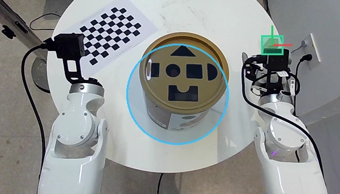
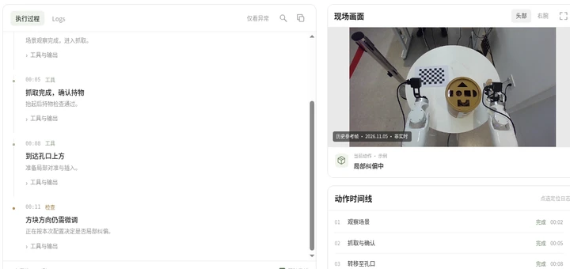

第一代本体 · 固定工位

固定位置机械臂
绑定单一工位，换线需重调工装与示教轨迹
绑定单一工位，换线需重调工装与示教轨迹

Z 型折叠升降躯干 + 轮式底盘，一台覆盖多岗位

零产线改造，直接进入按人设计的复杂工位

明确目标料架、放置区坐标与完工判据

解决来料歪斜、柔性形变与遮挡定位
常规跑传统程序，遇新场景由具身泛化破局
传统内核硬兜底防撞限位，柔性段按需接 VLA

将具身跑通的新解法验证固化为确定性程序
冻结程序、几何规划与安全内核，守住节拍稳定与物理安全底线
视觉分割、柔性 VLA 与大模型规划，攻克来料变化、换型与异常
具身攻克的新场景经独立验证固化入库，兼顾泛化上限与工业可靠性


4242 下发任务授权：F1 Owner 确认底盘停稳、急停未触发、关节反馈新鲜，才发放本次作业权限。
SAM 2 + 深度相机扫描料架：分割出目标格内的柔性泡沫纸堆，输出抓点位姿与置信度（不因低置信直接拦停）。
查经验库分流：第 1 格无现成记录 → 交 Astra 规划抓法；第 2–9 格命中冻结程序 → 0 次大模型直接执行。
| 现场可能遇到的困难 | 谁先处理 | 怎么解决 / 升级策略 |
|---|---|---|
| 料格阴影 / 反光导致找不到纸边 | ① 感知 / ② 程序 | 按上次标定格口重扫；仍看不清则由程序微调腕部相机换视角补拍；再无解才交 ⑤ Astra 指认抓点。 |
| 泡沫纸歪斜堆叠、超出格口 | ① SAM 2 泛化 | 传统固定坐标必然抓偏；SAM 2 按实时点云重估外露纸边朝向，动态生成当前格抓取位姿。 |
| 图像略旧或相机/关节时间戳微偏 | ④ 安全内核 | 仅记告警并降置信度、不终止任务；发布动作前内核用最新实测再复核一遍，旧图不会引起撞机。 |
OMPL + IK 生成避障轨迹，避开料架隔板；进入最后几厘米柔性夹持泡沫纸时，可无缝切换 π0.5 / RLT 策略。
F1 Owner 发布前复核：用最新关节与场景扫掠重查限位和格壁碰撞，经 Ruckig 平滑后下发，同时后台预算转运路径。
CAN + 视觉双验证：夹爪停在“未张满、未闭死”的稳定区间，叠加闭爪前目标图像确认 held = 是。
| 现场可能遇到的困难 | 谁先处理 | 怎么解决 / 升级策略 |
|---|---|---|
| 入格姿态会擦碰上下层隔板 | ③ 传统规划器 | 自动切换下一候选抓姿或开启关节空间搜索，绝不轻易终止；全部候选无解才交 ⑤ Astra 换入格方式。 |
| 泡沫纸太软打滑导致抓空 | ② 程序重试 | CAN 读数闭到底立刻判空；程序在限次预算内重新观测并微调深度再抓；连空才升 ⑤ Astra 改抓法。 |
| 夹爪探入格内挡住头部相机 | ① 感知判抓 | 不强求闭爪瞬间看见纸；以夹爪 CAN 读数为主，小幅回撤出格后再补拍一帧确认泡沫纸随手带出。 |
复用预算轨迹 + 重扫防撞：直接调用夹取阶段后台算好的收臂路径，F1 Owner 按在手泡沫纸体积重扫防撞后放行。
确定性跨工位移动：轮式底盘沿标定安全走廊驶向放置区料袋，到达后机械臂平稳下降并张开夹爪。
拒绝“发了指令就算成功”：核验夹爪 CAN 已完全张开 + 视觉确认泡沫纸静止落入料袋，输出带回执的成功状态。
| 现场可能遇到的困难 | 谁先处理 | 怎么解决 / 升级策略 |
|---|---|---|
| 转运途中泡沫纸松脱掉落 | ④ 内核 + ② 程序 | CAN 读数突变，内核先稳停手臂防甩飞；程序直接断点回到「看」重新定位拾取，不从头重跑任务。 |
| 料袋堆高 / 袋口位置发生偏移 | ③ 规划 + ① 感知 | 将终点从“单点”放宽为袋口安全区域，感知识别空位后微调释放高度，避免顶翻料袋。 |
| 关节反馈中断 / 越界 / 人工急停 | ④ 安全内核唯一 | 立即撤销动作权限并锁停，用实测确认停稳；这是唯一会让整条任务停下等待人工确认的一类错误。 |
原格复检 → 切下一格：底盘回位复看原格；仍有碎纸继续抓净，确认清空才推进格号，被遮挡格口标为待复检。
自动化漏斗统计：每格执行结束后自动记录到达阶段、单格耗时、重试次数与大模型调用次数，形成可审计证据链。
提出 → 独立验证 → 晋升复用：新抓法与修法须经独立 Verifier 复现通过才冻结写入经验库，出现反例自动降级。
由具身感知与 Astra 泛化探索抓法，解决传统示教无法应对的来料变化，并经 ASPIRE 独立验证。
直接走传统确定性冻结程序 + F1 Owner 安全内核，节拍稳定可控，彻底摆脱在线大模型延迟与抖动。
安全内核、漏斗评测、底盘转运与抓放原子技能全部跨任务复用，只需增量适配感知与柔性接触技能。